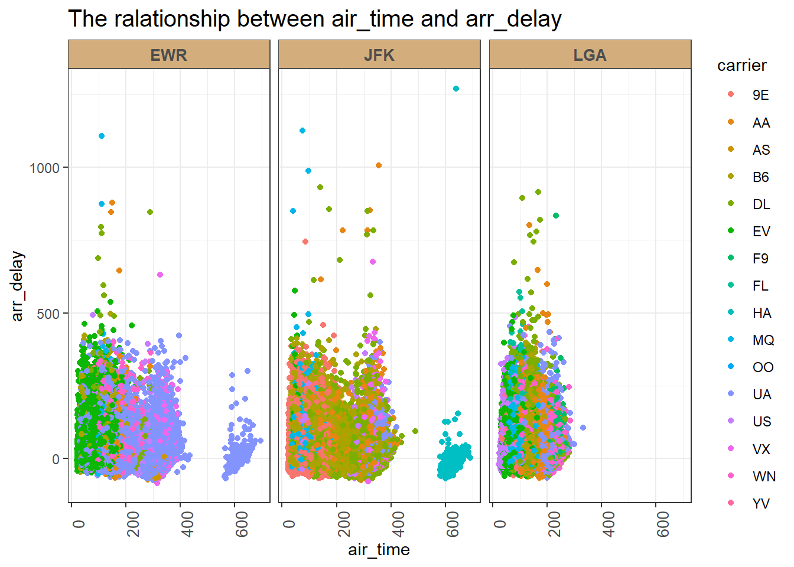

> library(nycflights13)
> library(tidyverse)flights dataset exploration
数据概况
> glimpse(flights)
Rows: 336,776
Columns: 19
$ year <int> 2013, 2013, 2013, 2013, 2013, 2013, 2013, 2013, 2013, 2…
$ month <int> 1, 1, 1, 1, 1, 1, 1, 1, 1, 1, 1, 1, 1, 1, 1, 1, 1, 1, 1…
$ day <int> 1, 1, 1, 1, 1, 1, 1, 1, 1, 1, 1, 1, 1, 1, 1, 1, 1, 1, 1…
$ dep_time <int> 517, 533, 542, 544, 554, 554, 555, 557, 557, 558, 558, …
$ sched_dep_time <int> 515, 529, 540, 545, 600, 558, 600, 600, 600, 600, 600, …
$ dep_delay <dbl> 2, 4, 2, -1, -6, -4, -5, -3, -3, -2, -2, -2, -2, -2, -1…
$ arr_time <int> 830, 850, 923, 1004, 812, 740, 913, 709, 838, 753, 849,…
$ sched_arr_time <int> 819, 830, 850, 1022, 837, 728, 854, 723, 846, 745, 851,…
$ arr_delay <dbl> 11, 20, 33, -18, -25, 12, 19, -14, -8, 8, -2, -3, 7, -1…
$ carrier <chr> "UA", "UA", "AA", "B6", "DL", "UA", "B6", "EV", "B6", "…
$ flight <int> 1545, 1714, 1141, 725, 461, 1696, 507, 5708, 79, 301, 4…
$ tailnum <chr> "N14228", "N24211", "N619AA", "N804JB", "N668DN", "N394…
$ origin <chr> "EWR", "LGA", "JFK", "JFK", "LGA", "EWR", "EWR", "LGA",…
$ dest <chr> "IAH", "IAH", "MIA", "BQN", "ATL", "ORD", "FLL", "IAD",…
$ air_time <dbl> 227, 227, 160, 183, 116, 150, 158, 53, 140, 138, 149, 1…
$ distance <dbl> 1400, 1416, 1089, 1576, 762, 719, 1065, 229, 944, 733, …
$ hour <dbl> 5, 5, 5, 5, 6, 5, 6, 6, 6, 6, 6, 6, 6, 6, 6, 5, 6, 6, 6…
$ minute <dbl> 15, 29, 40, 45, 0, 58, 0, 0, 0, 0, 0, 0, 0, 0, 0, 59, 0…
$ time_hour <dttm> 2013-01-01 05:00:00, 2013-01-01 05:00:00, 2013-01-01 0…year, month, day：起飞日期，分别表示年、月、日。
dep_time, arr_time：实际起飞时间和实际到达时间，以分钟为单位。
sched_dep_time, sched_arr_time：计划起飞时间和计划到达时间，以分钟为单位。
air_time：飞行时间，以分钟为单位。
distance：航班距离，以英里为单位。
time_hour：计划起飞日期和时间，作为POSIXct日期。
origin：起飞机场，用于与weather数据集进行连接。
起飞日期是否有影响
> flights |>
+ ggplot(aes(x=factor(day),y=arr_delay))+
+ geom_bar(stat="identity")+
+ facet_wrap(~month)对于每个月不同日期的推迟时间做出箱型图，发现推迟时间的长短有一定的周期性，每月都会有两个微弱的起伏。6月和7月延迟到达的时间的普遍较高而10月11月和1月的推迟时间较短，可能与当地的一些节假日或者天气有关。因此我们认为出发日期与推迟时间有一定的关系，但这种关系不是线性的。
飞行时间与推迟时间的关系
> flights |>
+ ggplot(aes(x=air_time,y=arr_delay))+
+ geom_point(aes(color = carrier))+
+ facet_wrap(~origin)+
+ labs(x="air_time",
+ y="arr_delay",
+ title="The ralationship between air_time and arr_delay")+
+ theme_bw()+
+ theme(strip.background = element_rect(colour = "grey30", fill = "#D3AE7C"),
+ strip.text.x = element_text(colour = "grey30", face = "bold"),
+ axis.text.x = element_text(angle = 90,size=10),
+ strip.text = element_text(size=10),
+ plot.title = element_text(size=15)) 
通过对于不同飞机机场出发的航班的空中飞行时间与推迟时间的散点图，可以看出飞行时间与推迟时间并不存在一个线性的关系。但我们可以发现，EWR和JFK两个机场都有远程航班，而远程航班推迟的几率相对较小，大部分都准时到达。LGA机场没有超过400小时以上的长途的航班。
由图中不同颜色可以看出，EWR地区的远程航班是UA，JFK地区的远程航班是HA，(但相邻的变量颜色相似，因此下面筛选出不同的地区的航班名字，以作筛选，可以很容易判断出哪个是长途航班)
> flights |>
+ filter(origin == 'EWR')|>
+ distinct(carrier)
# A tibble: 12 × 1
carrier
<chr>
1 UA
2 B6
3 AA
4 MQ
5 DL
6 US
7 EV
8 AS
9 WN
10 9E
11 VX
12 OO
> flights |>
+ filter(origin == 'JFK')|>
+ distinct(carrier)
# A tibble: 10 × 1
carrier
<chr>
1 AA
2 B6
3 UA
4 DL
5 US
6 VX
7 MQ
8 9E
9 HA
10 EV不同航空公司的飞行航班数
> Carrier <- flights |>
+ group_by(carrier = as.factor(carrier)) |>
+ summarise(count = n())> ggplot(Carrier, aes(x=carrier, y=count)) +
+ geom_point(size=4) +
+ geom_segment(aes(x = carrier,
+ xend=carrier,
+ y=0,
+ yend=count)) +
+ labs(x="carrier",
+ y="Number of flights",
+ title="Distribution of flights of each carrier")+
+ theme_bw()+
+ theme(plot.title = element_text(size=15),
+ axis.text.x= element_text(size=10),
+ axis.text.y= element_text(size=10),
+ axis.title=element_text(size=12))+
+ geom_hline(yintercept = c(40000, 10000), linetype = "dashed",color = "red")我们观察到，一年中B6、UA、EV、DL这几个航空公司的航班较多，AA、MQ、9E、WN这几个航空公司的航班中等，剩下几个航空公司的航班较少。
由于公司的规模不同，因此不同的航空公司飞行航班数也有差异，在不知道航空公司的其他信息的情况下，以每年40000和10000次为界限，我们可以将航空公司的规模分为三等，对比以下柱状图一起看。
航空公司与推迟时间的关系
柱状图
> flights|>
+ ggplot(aes(x=carrier,y = arr_delay))+
+ geom_bar(stat = 'identity',fill = 'steelblue')+
+ theme_bw()我们发现，AS、F9、HA、OO、YV航班几乎都准时到达，但是B6、DL、EV、UA这些航班的到达时间差距较大，很不稳定。 跟上图对照着看，我们发现小型公司的延误更少，他们一年中的航班数虽然少，但是几乎都准时到达，而航班数较多的大型航空公司遇到的情况更多，延误可能性更大，延误时间不稳定。
哑铃图
> library(ggalt)
> Arr <- flights |>
+ na.omit() |>
+ group_by(carrier = as.factor(carrier)) |>
+ summarise(min = min(arr_delay), max=max(arr_delay))
>
> ggplot(Arr,aes(x= min, xend=max, y=carrier, group = carrier)) +
+ geom_dumbbell(color="#a3c4dc",
+ size=0.75,
+ colour_x ="darkblue",
+ colour_xend="red",
+ size_x = 2,
+ size_xend = 2) +
+ labs(x="",
+ y="",
+ title="The span of arive delay at different carrier")+
+ theme_bw()+
+ theme(plot.title = element_text(size=15)
+ ,axis.text.x= element_text(size=10),
+ axis.text.y= element_text(size=10),
+ axis.title=element_text(size=10))航空公司与推迟时间的Dumbbell Chart(哑铃图)，采用的是最大延误时间与最小延误时间的差值（极差），大小反映在长度上。
从图中可以看出，大多数航空公司都存在一定程度的到达延误情况。 YV 航空公司的延误跨度最长，该航空公司的到达延误时间变化范围很大。 9E、AA 等的延误跨度相对较短，这些航空公司的到达延误时间变化范围较小。
Q1 为什么哑铃图展现的信息与柱状图不一样？
柱状图中，对于每个carrier（航空公司），arr_delay对应的是一个特定的值（可能是平均值、总和或者其他汇总值），而不是最大值和最小值。
这里将哑铃图的两端点定义为最大值和最小值，来看，不同航班的延误情况。两张图可以结合着看，得到更准确的信息。
不同地区的航班飞行数
> library(dplyr)
> # 先计算每个 origin 分组的计数
> origin_count <- flights |>
+ group_by(origin) |>
+ summarise(count = n())
>
> # 将计数数据合并到原始数据中
> flights_with_count <- left_join(flights, origin_count, by = "origin")
>
> custom_col <- c("brown", "red", "orange")
> ggplot(flights_with_count, aes(x = "", fill = factor(origin))) +
+ geom_bar(width = 1) +coord_polar(theta = "y", start = 0)+
+ theme(axis.line = element_blank(),
+ plot.title = element_text(hjust = 0.5, size = 15)) +
+ labs(fill = "class",
+ x = NULL,
+ y = NULL,
+ title = "Pie Chart of number of flights from different origins ") +
+ scale_fill_manual(values = custom_col)从饼图中可以看出，三个地区一年的航班数量不相上下，几乎相等。
目的地与推迟时间的关系
> flights |>
+ ggplot(aes(x=dest,y=arr_delay))+
+ geom_bar(stat="identity",fill = 'steelblue')+
+ theme_bw()+
+ theme(axis.text.x = element_text(angle = 90, hjust = 1,size = 5))发现推迟时间与目的地有关：部分地区的推迟时间较长，部分地区航班几乎都准时到达。